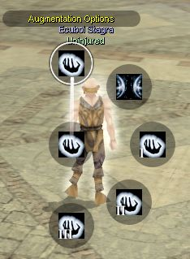

An important part of effectivly using psionics is augmentation. This means that by spending additional power points over and above the base points required by a power you can magnify the power's effects. Most powers can be augmented in only one way, however a few can be augmented to two or more different results. The amount of power points you have to spend for each augmentation varies depending on the power.
Remember, you cannot spend more power points on a single power than your manifester level.
This includes the additional costs from augmentation and/or metapsionics. However, abilities that increase your manifester level also increase the maximum number of power points you can spend, for example Overchannel.
Augmentation is controlled by a number of profiles. Switching between profiles happens instantly and it effects powers from that moment onwards. On the main augmentation subradial, there are 3 quickslots, "augmentation off", and augmentation options.

The quickslots each have an augmentation profile associated with them. These profiles can be edited through the augmentation options.
"Augmentation off" has a fixed profile associated with it that has zero for all augmentation options. Thus when selected, you will only pay the base point points, plus any metapsionics.
The other 3 augmentation subradials are used to select any of up to 50 pre-planned profiles. There is one subradial for 0-4, another for 5-9, and one for 00-40. The profile that is currently in use is the combined result of these three subradials.
For example, by default you use profile 00. If you then select the "4" subradial, you will switch to profile 04.
If you then press the "10" subradial, it will combine the "4" with the "10" and switch to profile 14.
If you next select the "7" subradial, it will replace the "4" with "7" and combine that with the "10" to switch to profile 17.
Previous Page Next Page